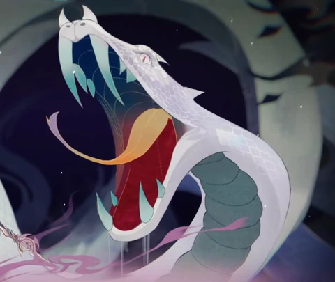

Inazuma · Gods & Divinity
Orobashi
Watatsumi Omikami led Enkanomiya’s people to the surface and became their protector. Eboshi’s account says the heavenly order forced him to sacrifice himself after he learned a truth that had to remain hidden.

Watatsumi Omikami and Enkanomiya
Orobashi is also called Watatsumi Omikami. Enkanomiya’s surviving people came to worship him after he entered their hidden realm, and the records connect him to their move from the depths to the surface. On Watatsumi, he became the island’s protector deity.
This is a transition in Enkanomiya’s history, not a claim that Orobashi created every institution or event that preceded him. The Dainichi Mikoshi, the Sun Children, and the Bathysmal Vishaps already belong to the broader history of the underground civilization.
The account in Erebos’ Secret
Eboshi, an Enkanomiyan shrine maiden remembered as a Sinshade, answers questions about the past in Erebos’ Secret. She says Watatsumi Omikami encountered a truth older than his own existence, and that the heavenly order forced him to sacrifice himself to keep that truth from being revealed.
Eboshi does not name the truth, identify the exact authority behind the phrase ‘heavenly order,’ or explain how the sacrifice was carried out. Her testimony is the game’s key explanation for why Orobashi’s death had a purpose beyond a simple territorial rebellion.
A death remembered from two sides
The Inazuma Archon Quest establishes that the Shogun killed Orobashi in the conflict between Inazuma and Watatsumi. Kokomi’s account calls him the island’s protector deity, while Shogunate records frame Watatsumi’s resistance as a threat to the nation.
These perspectives share the fact of the conflict but carry different memories of it. The story does not make the island’s religious remembrance and the Shogunate’s political record interchangeable.
Tatarigami and the Yashiori wards
After Orobashi’s death, his lingering power became known as Tatarigami. The world quest Orobashi’s Legacy sends the Traveler with Kaji to restore wards on Yashiori Island, including one at the Serpent’s Head. Kaji explains that the wards suppress the serpent god’s soul.
That quest supports the connection between Orobashi’s remains, the dangerous lingering power, and the wards. It does not establish every proposed date or a full history of the wardens.
What remains unresolved
The game has not revealed the truth Orobashi learned, why it threatened the heavenly order, or how that forced sacrifice relates in detail to the battle in which the Shogun killed him. Eboshi’s account and Watatsumi’s later history illuminate the same legacy from different points in time.
Read Erebos’ Secret with Before Sun and Moon, the Inazuma Archon Quest, Kokomi’s story quest, and Orobashi’s Legacy. Keeping each source’s scope visible prevents the rest of Enkanomiya’s history from being incorrectly folded into Orobashi’s biography.
This is an original CoreGG reading guide, not an official HoYoverse article or a reproduction of the game text. Source links below identify the records used so you can check the original context.
Sources & references
Check these sources for the original game text and reference trail.